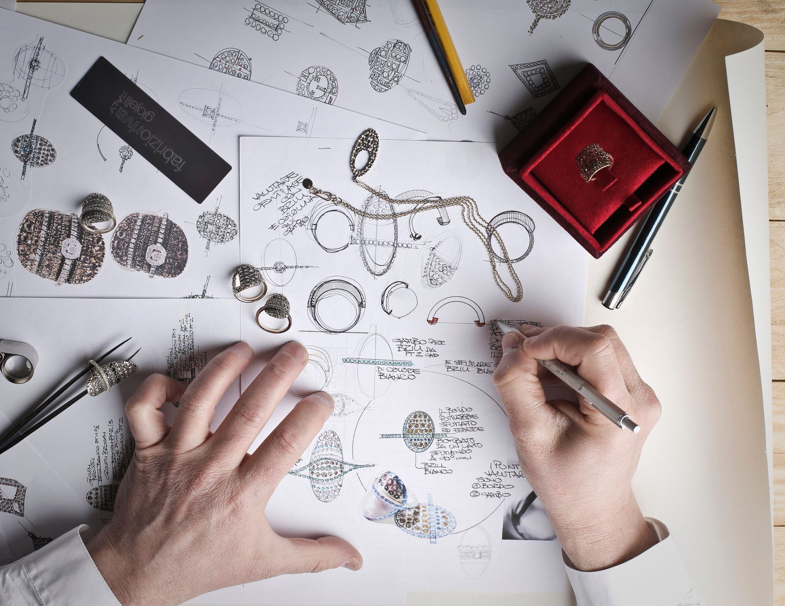
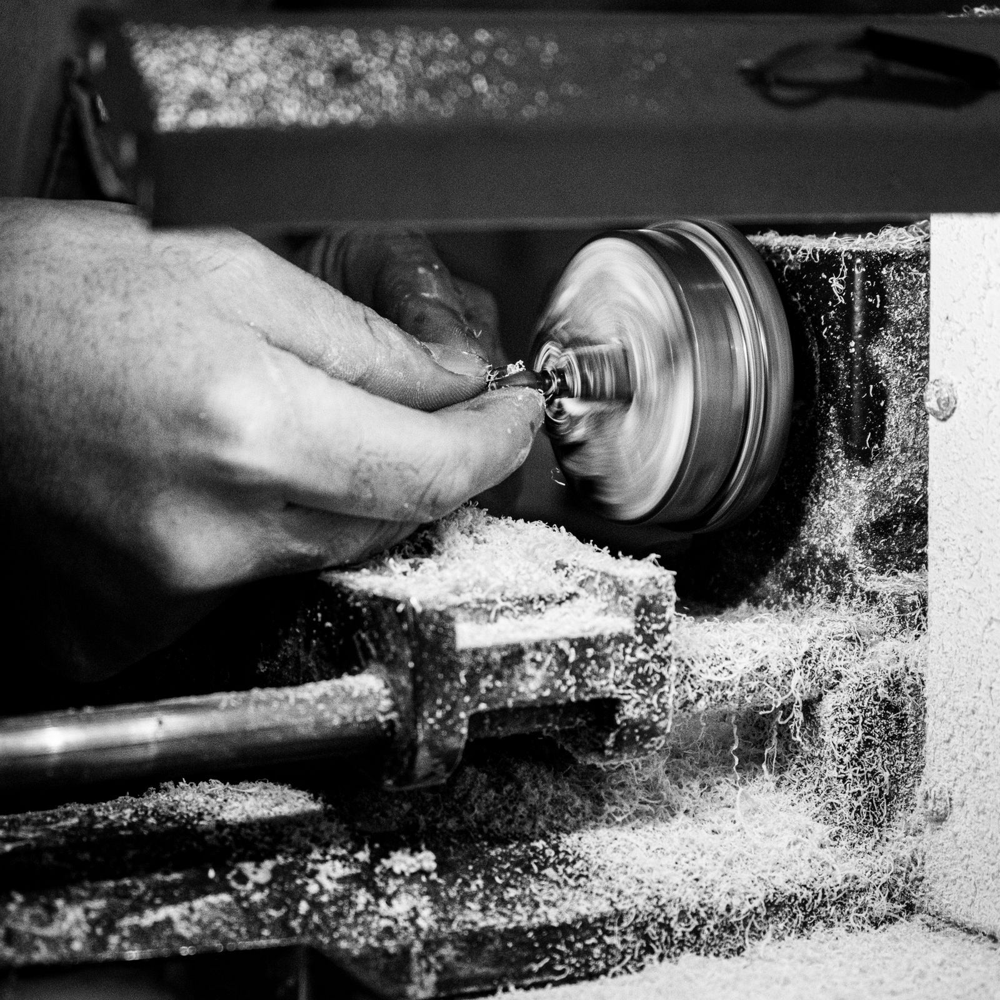

STEP 01
CAD設計・原型製作
デザインをCADで立体化し、製作のもととなる原型をつくります。
JEWELRY MANUFACTURING / KOFU, YAMANASHI
CAD設計・原型製作から、磨き・石留め、OEM製作まで。12名の職人が、シルバーをはじめとする幅広い貴金属を扱います。

SERVICE
ジュエリーづくりの各工程を、社内の職人が担当します。工程ごとのご依頼も、一貫したご依頼もご相談ください。
FOR BRANDS
ブランドや企業のご依頼に応じて、オリジナルジュエリーを製作します。デザインの立体化から仕上げまで、社内の工程でお受けします。
OEMのご相談はこちらCOMPANY
ACCESS
〒400-0851 山梨県甲府市住吉3-26-16
CONTACT
製作・加工のご依頼、OEM製作のご相談をお受けしています。